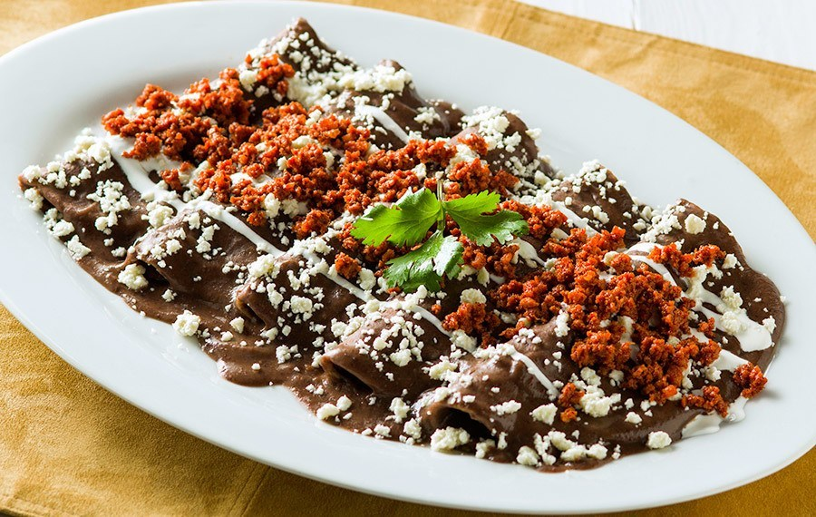

Enfrijoladas

Description
Enfrijoladas are made of corn tortillas dipped in a flavorful bean
sauce. Stuff them with cheese, and you have an easy and delicious
Mexican vegetarian meal.
Ingredients
- 2 cups black beans
- 3 chipotles in adobo
- 2 garlic cloves
- 1/2 teaspoon salt
- 1 cup stock
- 8 corn tortillas
- 3-4 tablespoons finely chopped onion
- Monterrey Jack cheese
- 1 avocado (optional)
- Cilantro (optional)
- Crema (optional)
Steps
- Add the beans, garlic, chipotles and salt to a blender and
puree until smooth. Add stock (or water) until the puree has
the consistency of a thick soup. Taste for seasoning and heat
level.
- Warm the corn tortillas in the oven or microwave. Place a big
dollop of bean puree on a plate. Dredge one side of a tortilla
in the bean puree. Flip the tortilla and fill with onion and
cheese. Roll tight and place in a baking dish seam side down
(add some puree to the baking dish to prevent sticking).
- Continue rolling all of the tortillas -- this batch was enough
for 8 rolled tortillas.
- Cover the tortillas in the baking dish with the remaining bean
puree. Bake at 425F for 8-10 minutes or until the cheese has
melted.
- Serve immediately and top with your choice of avocado, cheese,
cilantro and Crema.
Home